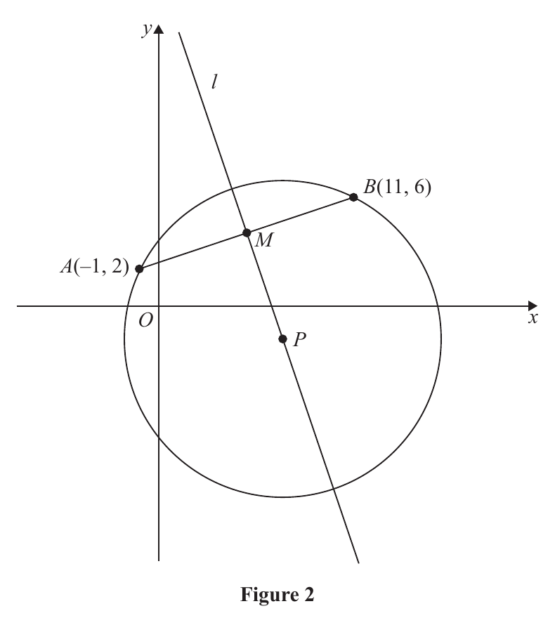
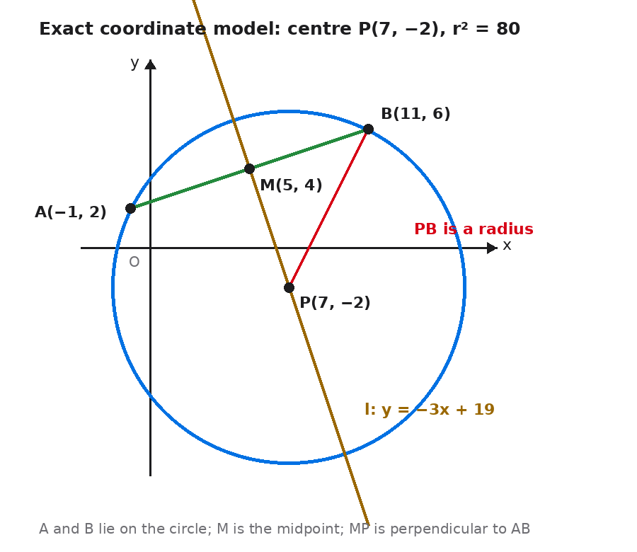

The point $A(-1,2)$ and the point $B(11,6)$ both lie on a circle with centre $P$. The point $M$ is the midpoint of $AB$.
Given that the line $l$ passes through $M$ and $P$, as shown in Figure 2,
(a) find an equation for $l$, giving your answer in the form $y=mx+c$, where $m$ and $c$ are constants. (4)
Given that $P$ has coordinates $(7,k)$, where $k$ is a constant,
(b) find the value of $k$. (1)
(c) find an equation for the circle. (3)

Official source figure: Pearson Edexcel WMA12/01 January 2025 Q6 Figure 2.
Status: completed live after correction. The board frame verifies the point-slope coordinate slip and the radius prompt.
[8 marks: (a) 4, (b) 1, (c) 3]
Strategy. Find the midpoint of chord $AB$, calculate the chord gradient, negate its reciprocal for the perpendicular bisector, and use point-slope form through the midpoint. Keep each coordinate paired with its own variable.
Why this method applies. The line joining a circle’s centre to the midpoint of a chord is perpendicular to the chord. Because $l$ passes through $M$ and $P$, it is the perpendicular bisector of $AB$. This supplies both a point and a gradient.
Formula or definition first. Midpoint: $M=((x_A+x_B)/2,(y_A+y_B)/2)$. Gradient: $m_{AB}=(y_B-y_A)/(x_B-x_A)$. Perpendicular nonvertical gradients satisfy $m_{AB}m_l=-1$. Point-slope: $y-y_M=m_l(x-x_M)$.
Full intermediate derivation. Compute $M=((-1+11)/2,(2+6)/2)=(5,4)$. Then $m_{AB}=(6-2)/(11-(-1))=4/12=1/3$, so $m_l=-3$. Through $M$: $y-4=-3(x-5)=-3x+15$. Add 4: $\boxed{y=-3x+19}$.
Difficult transition. The coordinate pairing is the difficult transition: $M=(5,4)$ means $x-5$ and $y-4$. Writing $y-5$ borrows the x-coordinate and yields the wrong intercept 20, shifting the entire line.

Check back / sense check. Substitute $M=(5,4)$ into the final line: $-3(5)+19=4$. Multiply gradients: $(1/3)(-3)=-1$. Both the point and perpendicularity conditions hold.
Strategy. Use the fact that centre $P=(7,k)$ lies on the line $l$ found in part (a). Substitute its x-coordinate into the line equation and identify the resulting y-coordinate as $k$.
Why this method applies. Every point on $l$ satisfies $y=-3x+19$. The source explicitly places $P$ on $l$, so no new geometry is needed. This is a one-mark substitution that depends on carrying the corrected intercept 19.
Formula or definition first. For $P=(7,k)$ on $l:y=-3x+19$, use $k=-3(7)+19$.
Full intermediate derivation. Calculate $k=-21+19=-2$. Therefore $\boxed{k=-2}$ and the centre is $P=(7,-2)$.
Difficult transition. If the earlier wrong line $y=-3x+20$ were carried forward, it would give $k=-1$. This shows why a one-unit point-slope slip changes the centre and every subsequent circle calculation.
Check back / sense check. Substitute $P=(7,-2)$ back: $-3(7)+19=-2$. The point therefore lies on the perpendicular bisector as required.
Strategy. Use the centre from part (b) and draw a radius to either known point on the circle. Calculate the squared distance directly, then write centre-radius form without taking an unnecessary square root.
Why this method applies. A circle equation needs centre coordinates and $r^2$. The source gives both $A$ and $B$ on the circle. Using $B=(11,6)$ with $P=(7,-2)$ gives small integer coordinate differences and therefore a clean squared radius.
Formula or definition first. Circle form: $(x-h)^2+(y-k)^2=r^2$. Distance squared from $P(7,-2)$ to $B(11,6)$ is $r^2=(11-7)^2+(6-(-2))^2$.
Full intermediate derivation. Compute the differences: $11-7=4$ and $6+2=8$. Thus $r^2=4^2+8^2=16+64=80$. With centre $(7,-2)$, the equation is $\boxed{(x-7)^2+(y+2)^2=80}$.
Difficult transition. The sign inside the y-bracket reverses the centre coordinate: centre y-coordinate $-2$ produces $(y-(-2))^2=(y+2)^2$. Also, the equation uses $r^2=80$; replacing the right side by $\sqrt{80}$ would mix radius with squared radius.
Check back / sense check. Check point $A(-1,2)$ too: $(-1-7)^2+(2+2)^2=64+16=80$. Both printed points satisfy the equation, independently confirming the centre and radius calculation.